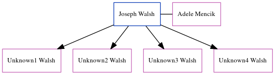

Charlotte Cowell c1826 - 1849
[ Home ] | [ Calendar ] | [ Surnames Index ] | [ Errors ] | [ Family History ]The child of Troward Cowell (an agricultural labourer) and Mary Castle, Charlotte Cowell, the three times great-aunt of Nigel Horne, was born in Kent, England c. 18261,2 and baptised in Wingham, Kent, England on 19 Aug 1827.
During her life, she was living in Wingham in 18411; and in Wingham Well, Kent, England on 6 Jun 18417.
She died in 1849 in Wingham3 and was buried there at St Mary the Virgin Church on 10 Mar 18494,5,6.
Parents
- Troward was born on 15 May 1791
- Mary was born c. 1796
Citations
- 1841 England Census Online publication - Provo, UT, USA: The Generations Network, Inc., 2006.Original data - Census Returns of England and Wales, 1841. Kew, Surrey, England: The National Archives of the UK (TNA): Public Record Office (PRO), 1841. Data imaged from the National
- England Deaths & Burials 1538-1991 - Findmypast
- England, Select Deaths and Burials, 1538-1991 Ancestry.com Operations, Inc.
- Kent, Canterbury Archdeaconry burials 1538-1988 - Findmypast
- England Deaths & Burials 1538-1991 - Findmypast
- England Deaths & Burials 1538-1991 - Findmypast
- 1841 England, Wales & Scotland Census - Findmypast (was age 15 and the daughter of the head of the household)
Media
England & Wales deaths 1837-2007 - BMD/D/1849/1/AZ/000159/014
Kent, Canterbury Archdeaconry burials 1538-1988 - GBPRS/CANT/D/95388241
1841 England, Wales & Scotland Census - GBC/1841/0013985842
England Deaths & Burials 1538-1991 - R_276650166
England Births & Baptisms 1538-1975 - R_884741945
Family Tree
Map
Generated by ged2site. Last updated on Jul 3, 2024
Known Issues
1841: Not living with either parent in childhood when aged 15
May have been living with mother on 6 Jun 1841, but the addresses don't match or aren't detailed enough to be sure
May have been living with father on 6 Jun 1841, but the addresses don't match or aren't detailed enough to be sure